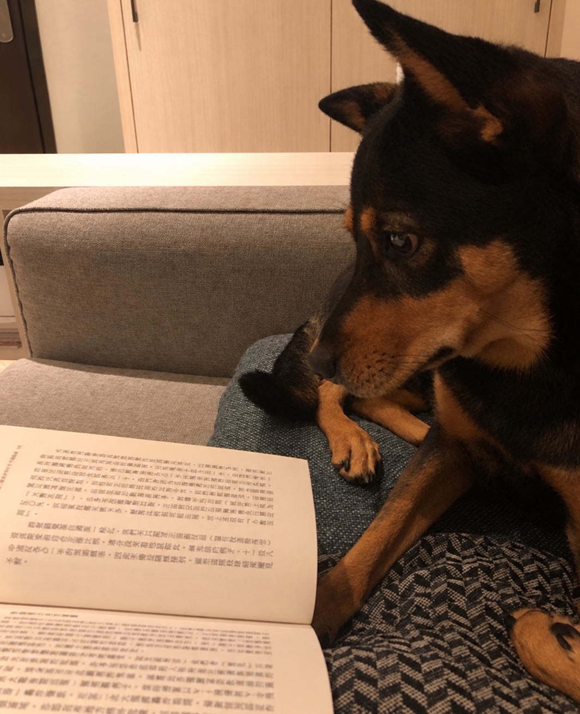
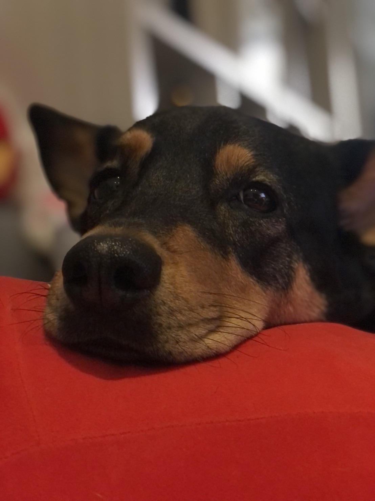

IMAGE / 03MS83
IMAGE / 03MS83黃花之間
一條路、一片花田，以及一隻突然停下來看向遠方的狗。
READ THE STORY ↗THE CURRENT COLLECTION
03 / 83
Three frames.
Three stories kept.
IMAGE / 03MS83一條路、一片花田，以及一隻突然停下來看向遠方的狗。
READ THE STORY ↗
IMAGE / 02MS83每天都會看到的臉，換一個觀看方式，就成為一張真正的肖像。
READ THE STORY ↗
IMAGE / 01MS83紅色靠墊、黑色毛髮，以及下一個動作發生之前的表情。
READ THE STORY ↗When a photograph is seen,
the shoot is already finished.
The story is just beginning.